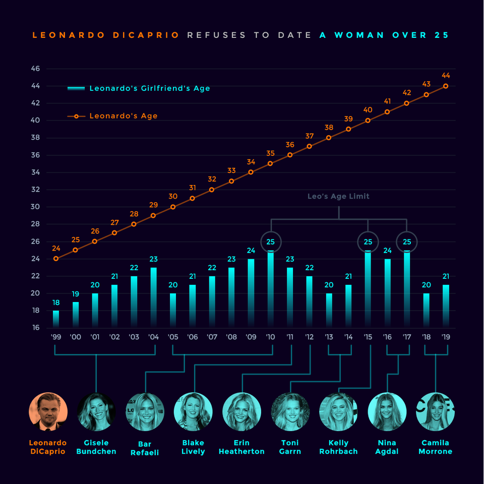
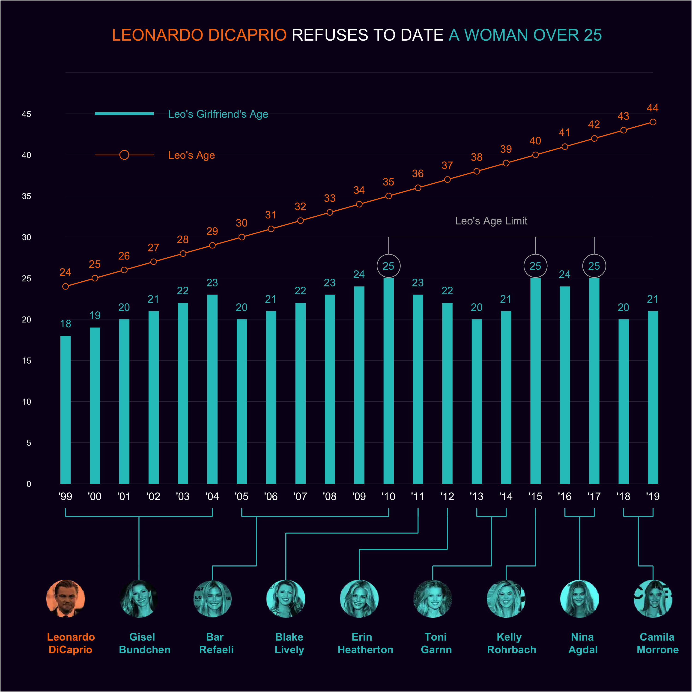

library("tidyverse")
library("ggtext")
library("ggimage")
library("sysfonts")
library("showtext")
library("ggplot2")L. DiCaprio Refuses to Date Anyone Over 25 Years
Some time ago, celebrity news broke that Leonardo DiCaprio and his much younger girlfriend, Camila Morrone, had broken up. America is having a cultural discussion about older men dating younger women. It is less a question about the legality of a man in his thirties or forties, as with DiCaprio, having a relationship with a woman in her very late teens or early twenties. It is more a question of the ethics of such a relationship. In the eyes of the law, an eighteen-year-old is undoubtedly eligible to participate fully in all aspects of society (enrolling in the military, voting, etc.). However, a man of DiCaprio’s stature, and given his wealth and fame, is likely to hold a certain sway over a much younger person, and collectively we are wondering if
DiCaprio also stands out when it comes to the challenge of talking about this particular social issue. It’s because he embodies all the problematic elements that spark public discourse. He’s an incredibly famous actor with immense wealth. As a consequence of his wealth and fame, we have been privy to aspects of his romantic life for a couple of decades now. And as he aged throughout this period, his romantic prospects generally remained within a particular age bracket. So much, so that gossip mills speculate that DiCaprio has some age cut-off.
At some point in the discourse about this famed actor’s love life, a graphic appeared (see below) on the internet that lent some credibility to the gossip mills. It is a beautiful graphic, and I have long thought about how to duplicate it. It was initially posted to the sub-Reddit r/DataisBeautiful by the user u/TrustLittleBrother, in 2019 when DiCaprio broke up with a previous partner. It was then updated in 2022. The below graphic is the 2019 version.
r/DataisBeautiful requests posters provide citations, and the creator did, citing several celebrity gossip magazines as their data source and MS Excel as the tool used to create the visual. It is a very well-crafted visual, blending data, a good eye for color and font, and a straightforward conclusion.
Over the years, others have tried to recreate it to varying levels of success. But recently, I have sought to recreate it using some of the tools in R I know (e.g., ggplot2). I’d not had much success, and then I came across the tutorial from Tanya Shapiro (i.e., tashapiro on Github), who produced the best approximation I had come across. I was finally able to create the visual of DiCaprio’s inability to have a romantic relationship with someone over the age of twenty-five years.

Required Packages
- tidyverse is a suite of packages that aide in data manipulation and wrangling.
- ggplot2 is a package to create elegant data visualizations.
- ggtext is a package that create improved text rendering when using ggplot2
- ggimage is a package that facilitates the use of images within ggplot2
- sysfonts is a package that aids in loading specific fonts into R.
- showtext is a package that assists in the ease of use of certain font packages.
Import Fonts
There are some fonts needed to help ensure the visuzal imitates the initial visual createed by u/TrustLittleBrother. Shapiro recommends using “roboto” and “open sans”. I have also tried using the free Googlefont “montserrat”. I think u/TrustLittleBrother used Gotham or some other similar font. Gotham is licensed by Microsoft, and so that’s why they were able to use it for their design. However, with R and ggplot2 we really only have access to the free Google fonts. and the best approcximation of Gotham is probably Montserrat or Roboto.
font_add_google("montserrat", "montserrat")
font_add_google("open sans", "open sans")
showtext_autofunction (enable = TRUE, record = TRUE)
{
showtext_hook = structure(function() showtext_begin_internal(record),
class = "showtext_hook")
remove_hook = function(name) {
hooks = getHook(name)
is_showtext_hook = vapply(hooks, inherits, logical(1),
"showtext_hook")
setHook(name, hooks[!is_showtext_hook], "replace")
}
remove_hook("plot.new")
remove_hook("grid.newpage")
if (isTRUE(enable)) {
setHook("plot.new", showtext_hook, "append")
setHook("grid.newpage", showtext_hook, "append")
}
}
<bytecode: 0x7fde46cec7f0>
<environment: namespace:showtext>Create Dataframe
This is the good part, there is some data that goes along with the visual document created by u/TrustLittleBrother. In their original posting to r/DataIsBeautiful. They do mention the source, but they note that it was cobbled together from othe sources, and there is no data file such as a “csv”, “xlsx”, or a “dat” file.
To remedy this situation, I could create the data elsewhere and simply read it into R. Howeever, it is a small dataset, and so I can create the dataframe in R quite easily suing some base R functions.
df<- data.frame(
year = 1999:2019,
age_leo = 24:44,
gf = c(
rep("Gisel Bundchen",6),
rep("Bar Refaeli",6),
"Blake Lively",
"Erin Heatherton",
rep("Toni Garnn",2),
"Kelly Rohrbach",
rep("Nina Agdal",2),
rep("Camila Morrone",2)
),
age_gf = c(
18:23,
20:25,
23,
22,
20:21,
25,
24:25,
20:21
)
)We also want to create a second dataframe that documents the major points for annotation. So, per u/TrustLittleBrother, there are labels to indicate DiCaprio’s supposed dating age limit, which is 25 years. That age limit has been hit three times, in 2010, 2015 and 2017, by Bar Refaeli, Kelly Rohrbach, and Nina Agdal respectively. To create those major labels, we create the following dataframe.
max_points<- data.frame(x = c(
2010,
2015,
2017
),
y = rep(25,3))Then we need to group our data by the year and girlfriend. Recall from the image above that u/TrustLittleBrother has the data grouped in this way. We thus create a dataframe has this grouping done this way.
This dataframe is also useful because it summarises when DiCaprio started dating each woman and when the dating ended. Denoting a minium year (i.e., start) and a maximum year (i.e., end) will be useful for labeling.
by_gf<-df %>%
group_by(gf) %>%
summarise(min_year = min(year),
max_year = max(year))Color Palette
One of the more eye-engaging aspects of u/TrustLittleBrother’s work is the color palette they used. In earlier times, I (and T. Shapiro), who I am following would have to eyeball the colors and make a good guess. Fortunately, these days, there are color picker apps and tools you can use to identify those nifty colors you’d like to use for your creation.
I often like to use the Eye Dropper App. Firstly, it is a neat open source app, and it has Chrome web browser extension. The creators claim it does not track your data and so take that information as you will.
pal_leo<- "#FD7600" # A dark orange
pal_gf<- "#24C4C4" # A teal like color
pal_bg<- "#0A001D" # A dark purple (Alternative #030623)
pal_annotate<- "#B6B6B6" # A lighter greyCenter Images
We also have to create a dataframe that allows you to place images in the visual document. If you will recall, the u/TrustLittleBrother data viz contains images of the ex-girlfriends and DiCaprio himself. It is what makes the original image so engaging and appealing.
images<-data.frame(name=c("Leonardo DiCaprio", unique(df$gf)),
pos = seq(from=1999, to=2019, length.out = 9),
pal_label<-c(pal_leo, rep(pal_gf,8)))%>%
mutate(path = paste0("images/",str_replace_all(tolower(name)," ","_"),".png"))Connectors Dataframe
We are going to create connectors. Again to go back to the original image created by u/TrustLittleBrother there are neat lines that connect the labels in the image. These connectors are well spaced enhancing the visual image that we are seeing.
connectors<-data.frame(
x = c(2001.5,2004,2005.5,2006.5, 2006.5,2011,2009,2009,2012,2011.5,2013.5,2014,2015,2016.5,2019,2018.5),
xend = c(2001.5, 2005.5,2005.5,2006.5,2011,2011,2009,2012,2012,2013.5,2013.5,2015,2015,2016.5,2018.5,2018.5),
y= c(-10,-10,-10,-10,-6,-6,-10,-8,-8,-10,-10,-10,-10,-10,-10,-10),
yend = c(-4,-10,-4,-6,-6,-4,-8,-8,-4,-10,-4,-10,-4,-4,-10,-4)
)Custom Title for Image
There are three colors in the title. There is a dark orange that spans “LEONARDO DICAPRIO”, a light grey that spans “REFUSES TO DATE”, and a teal that covers the remaing words, “A WOMAN OVER 25”.
title<-'<span style="color:#FD7600;">LEONARDO DICAPRIO</span><span style="color:white;"> REFUSES TO DATE </span><span style="color:#24C4C4;font-weight: bold;">A WOMAN OVER 25 </span>'Create the plot
Within the “geompoint()” of ggplot2, there is the shape option which allows you to define the shape (i.e., square, circle, etc.). Therefore, shape = 21, filled circle blue, is what we have chosen for our attempt below.
# Basics of the plot (i.e., Axes etc.)
p1 <- ggplot(data=df, aes(x=year))
p1 <- p1 + geom_segment(data=data.frame(y = seq(from=0, to=50, by=5)),
mapping = aes(x=1999, xend=2019, y=y, yend=y), color="white", size=0.1, alpha=0.2)
# We plot L. DiCaprio's age data
p1 <- p1 + geom_line(mapping=aes(y=age_leo), color=pal_leo)
p1 <- p1 + geom_point(mapping=aes(y=age_leo), shape=21, fill=pal_bg, color=pal_leo, size=2.5)
p1 <- p1 + geom_text(mapping=aes(y=age_leo+1.75, label=age_leo), color=pal_leo)
# We plot the ex-girlfriend's age data
p1 <- p1 + geom_segment(mapping=aes(x=year, xend=year, y=0, yend=age_gf), color=pal_gf, size=5)
p1 <- p1 + geom_text(mapping=aes(y=age_gf+1.5, label=age_gf), color=pal_gf)
# We have to adjust the scales to allow for pictures
p1 <- p1 + scale_y_continuous(limits=c(-20,50), breaks=seq(from=0, to=46, by=5))
# We create a new x-axis to support the picture labels
p1 <- p1 + geom_text(mapping=aes(x=year, label=paste0("'",substr(year,3,4)), y=-1.5), color="white")
# We insert max age limit annotations
p1 <- p1 + annotate(geom="text", label="Leo's Age Limit", x=2013.5, y=32, color=pal_annotate)
p1 <- p1 + geom_segment(mapping=aes(x=2010, xend=2017, y=30, yend=30), color=pal_annotate, size=0.15)
p1 <- p1 + geom_segment(data=max_points, mapping=aes(x=x, xend=x, y=30, yend=26), color=pal_annotate, size=0.3)
p1 <- p1 + geom_point(data=max_points, mapping=aes(x=x, y=y+1.5), shape=21, fill=pal_bg, color=pal_annotate, size=11)
p1 <- p1 + geom_text(data=max_points, mapping=aes(x=x, y=y+1.5, label=y), color=pal_gf)
# We create custom legends for our chart.
p1 <- p1 + geom_segment(data=data.frame(x=rep(2000,2), xend=rep(2002,2), y=c(40,45), color=c(pal_leo,pal_gf), size=c(0.25,1.5)), mapping=aes(x=x,xend=xend,y=y, yend=y, color=color, size=size))
p1 <- p1 + geom_point(mapping=aes(x=2001, y=40), shape=21, color=pal_leo, fill=pal_bg, size=4)
p1 <- p1 + annotate(geom="text", y=45, x=2002.5, label="Leo's Girlfriend's Age", color=pal_gf, hjust=0)
p1 <- p1 + annotate(geom="text", y=40, x=2002.5, label="Leo's Age", color=pal_leo, hjust=0)
p1 <- p1 + scale_size_identity()
# We create the groupings of ex-girlfriends
p1 <- p1 + geom_segment(data=by_gf, mapping=aes(x=min_year, xend=max_year, y=-4, yend=-4), color=pal_gf)
p1 <- p1 + geom_segment(data=by_gf, mapping=aes(x=min_year, xend=min_year, y=-4, yend=-3), color=pal_gf)
p1 <- p1 + geom_segment(data=by_gf, mapping=aes(x=max_year, xend=max_year, y=-4, yend=-3), color=pal_gf)
# We create segments to connect images to groupings.
p1 <- p1 + geom_segment(data=images %>% filter(name!="Leonardo DiCaprio"), mapping=aes(x=pos, xend=pos, y=-13, yend=-10), color=pal_gf)
p1 <- p1 + geom_segment(data=connectors, mapping=aes(x=x,xend=xend,y=y,yend=yend), color=pal_gf)
# We can then plot our images
p1 <- p1 + geom_image(data=images, mapping=aes(y=-14, x=pos, image=path), size=0.06)
p1 <- p1 + geom_richtext(data=images,
mapping=aes(y=-19.5, x=pos, color=pal_label, label=str_replace(name," ","<br>")),
fill = NA, label.color = NA, hjust=0.4,
show.legend = FALSE, fontface="bold")
p1 <- p1 + scale_color_identity()
p1 <- p1 + labs(title=title, x="", y="")
p1 <- p1 + theme(
panel.background = element_rect(fill=pal_bg, color=NA),
plot.background = element_rect(fill=pal_bg),
plot.title = element_textbox_simple(size=17, halign=0.5),
text = element_text(color="white"),
plot.margin = margin(t=30, l=10, r=10),
panel.grid = element_blank(),
axis.text.y=element_text(color="white"),
axis.ticks.y = element_blank(),
axis.text.x = element_blank(),
axis.ticks.x=element_blank()
)Save the Plot
We can now save the plot, adjusting its dimensions so that the images don’t looks streteched out.
ggsave("dicapriogfs_sab.png", height=10, width=10)